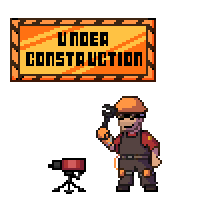

You've wandered into the space between spaces. The home of noone... except the nisses, they live here. Yes, even on the internet. In fact they kinda thrive on the internet even more than real-life. CHEESE! GO, HOME!